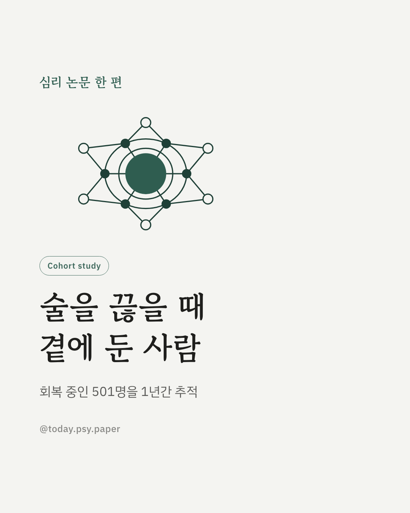
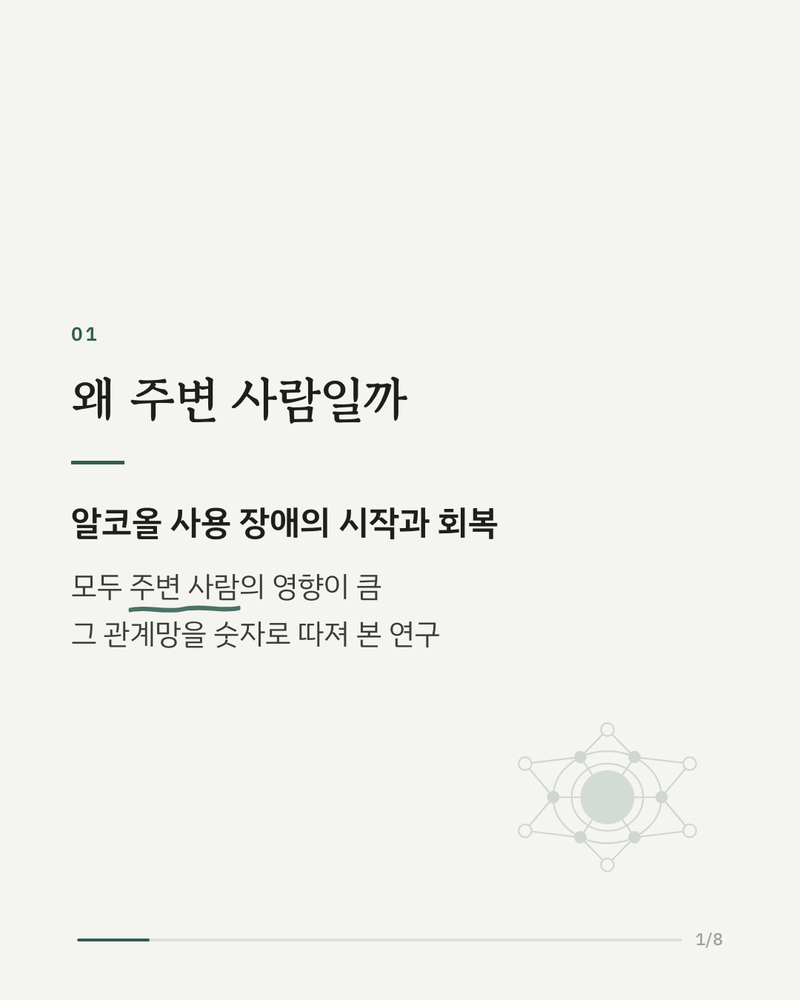
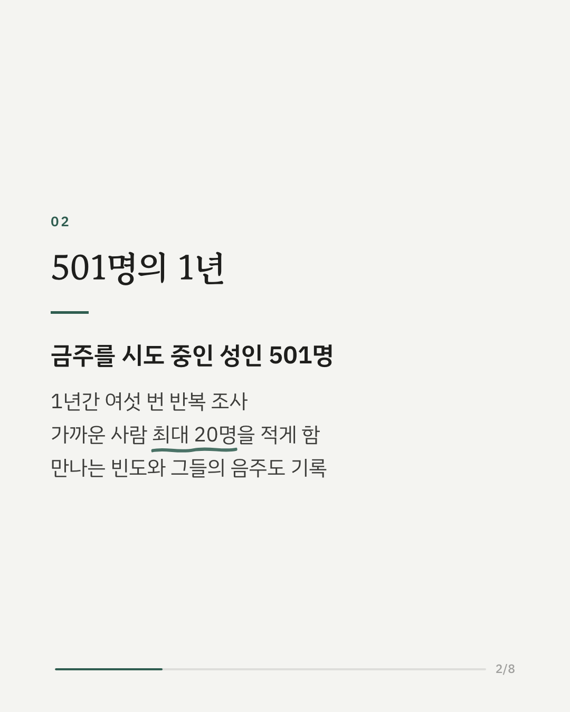
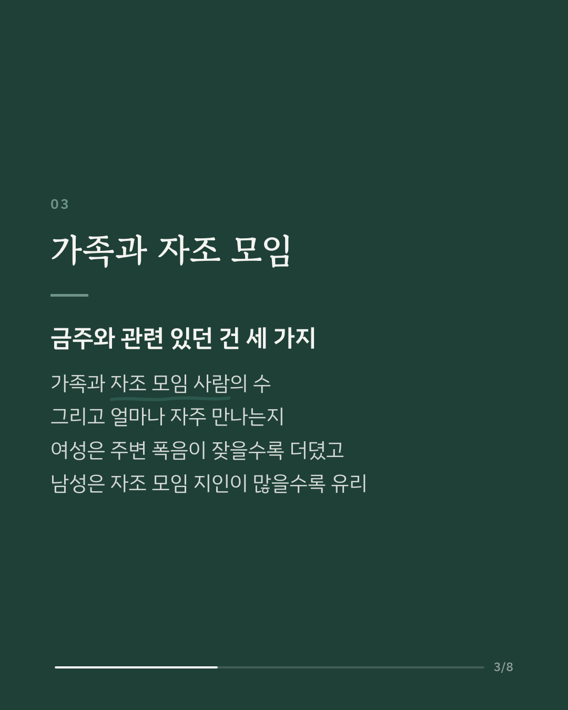
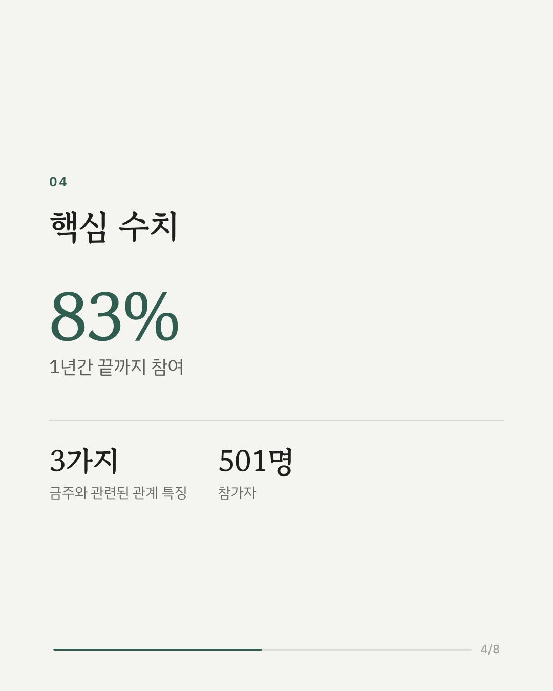
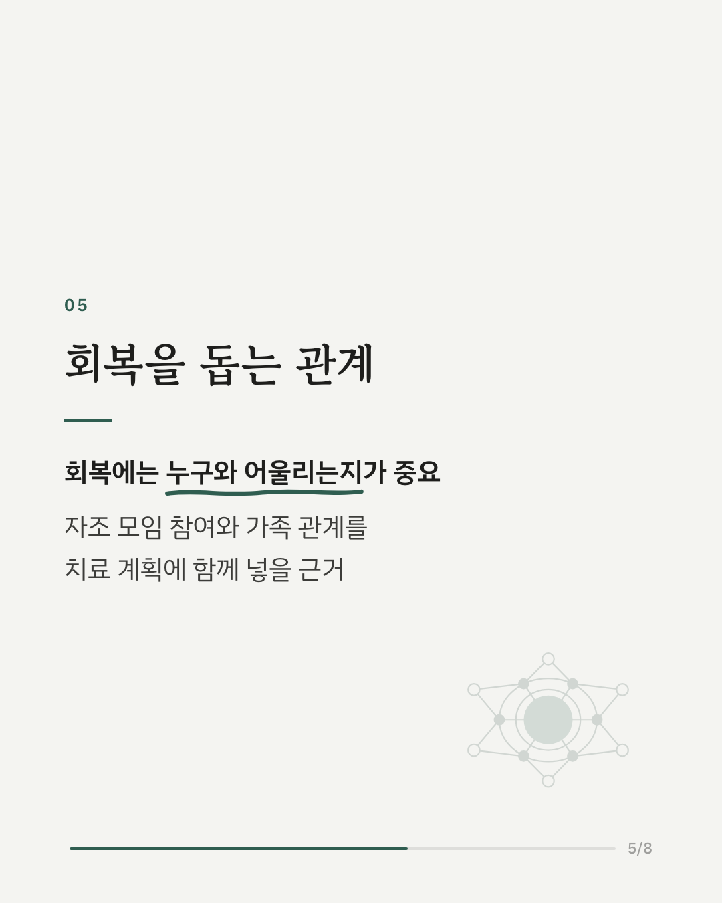
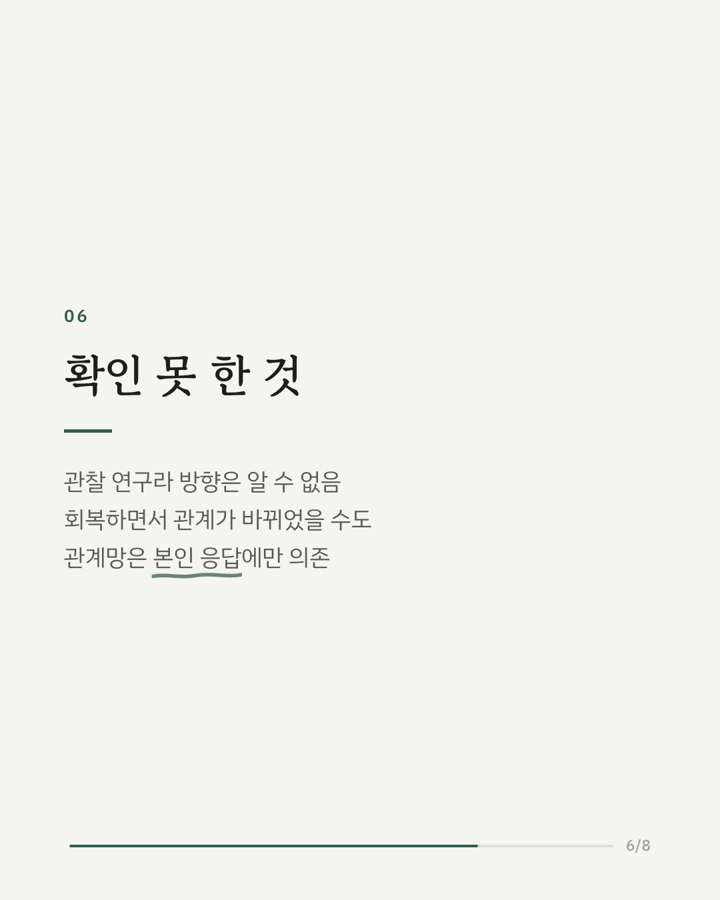
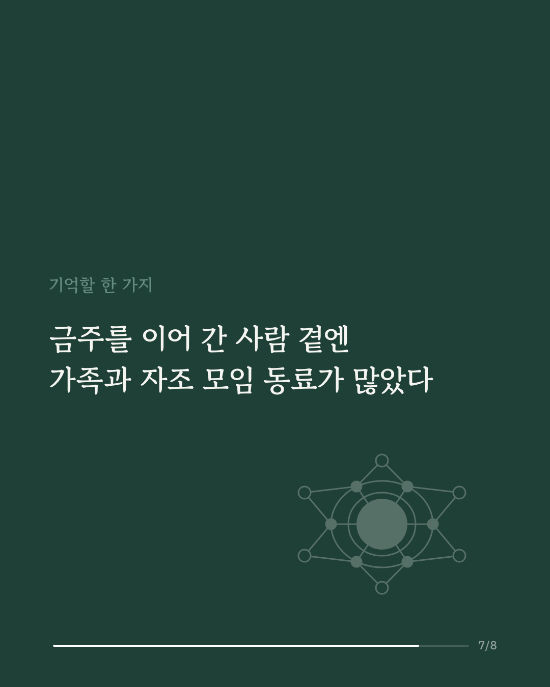
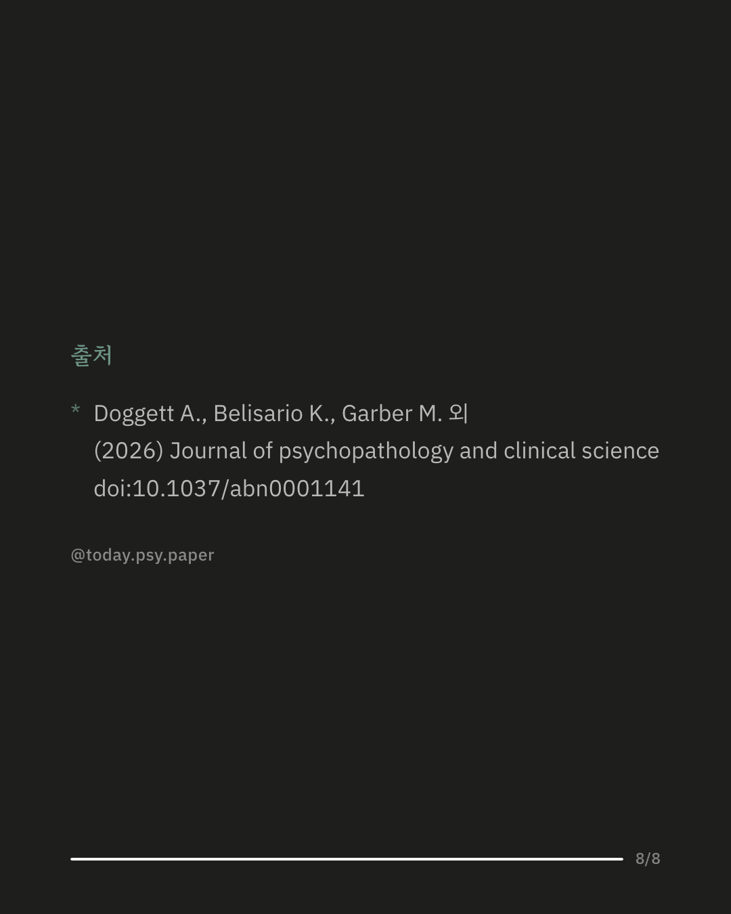

알코올 사용 장애에서 벗어나 금주를 이어 가는 일이 주변 사람과 얼마나 관련 있는지 살펴본 연구입니다. 연구진은 회복을 시도 중인 성인 501명을 1년 동안 여섯 번 조사하며, 가장 가까운 사람 최대 20명이 누구인지, 얼마나 자주 만나는지, 그 사람들이 술을 얼마나 마시는지를 함께 기록했습니다. 금주와 관련 있던 관계망 특징은 세 가지였습니다. 가족의 수, AA 같은 자조 모임 사람의 수, 그리고 이들과 만나는 빈도입니다. 자조 모임 사람 수와 만남 빈도는 주당 음주량 감소와도 관련이 있었습니다. 반대로 주변 사람들의 폭음이 잦을수록 음주 위험 수준의 개선은 더뎠습니다. 남녀 차이도 보였습니다. 주변 폭음과 더딘 개선의 관련성은 여성에게서, 자조 모임 사람이 많을 때의 이점은 남성에게서 두드러졌습니다. 다만 관찰 연구여서 좋은 관계가 회복을 도운 것인지, 회복하면서 관계가 바뀐 것인지는 구분하기 어렵습니다. 출처: Journal of Psychopathology and Clinical Science (2026), 'Social network mechanisms of behavior change in alcohol use disorder recovery: A longitudinal observational cohort study' DOI: 10.1037/abn0001141 #알코올사용장애 #금주 #중독회복 #자조모임 #임상심리 #정신건강정보 #심리학연구 #논문리뷰
python3 publish.py 42423686